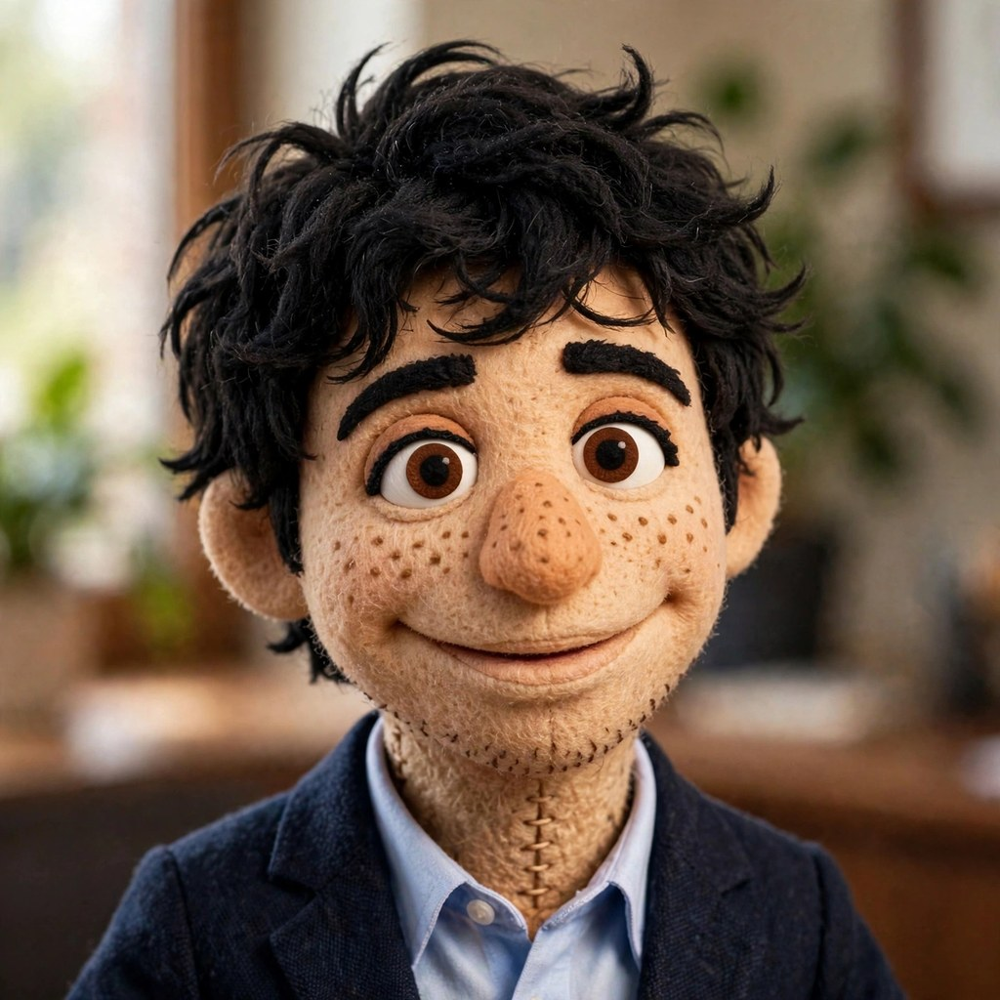

Rowan
Ashfires Brand Steward | Podcast Host
Rowan is drawn to stories, unexpected connections, and the questions nobody thought to ask. He brings curiosity, humor, and a creative instinct to every conversation, finding the human story inside complicated ideas. He's usually the one opening a door just to see where it leads.